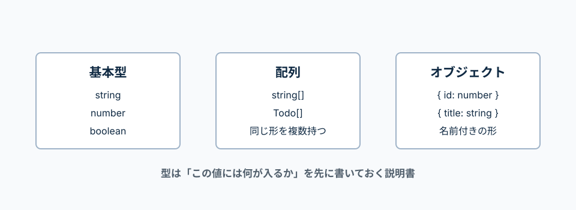

string、number、boolean、配列、オブジェクト、type、interface、unionを整理する。
Everyday Typesでは、JavaScriptで日常的に使う値に型を付ける方法が整理されている。
まずは基本型、配列、オブジェクト、unionを読めれば十分。
型は「この値には何が入るか」を表す説明書。
配列なら中身の型、オブジェクトならプロパティの名前と型を見る。

const title: string
: の後ろが型
titleには文字列が入る、という意味。
string[]
[] が付くと配列型
文字列が複数入る配列。
type Todo = { ... }
{} の中に形を書く
Todoが持つid、title、isDoneを書く。
title?: string
? は省略できる
titleがあってもなくてもよい、という意味。
文字列、数値、true/falseを明示する。
const title: string = 'Todo';
const count: number = 3;
const isDone: boolean = false;
string
文字列。例: 'Todo'、'太郎'。
number
数値。例: 3、1000。
boolean
trueかfalse。
TypeScriptでは、配列の値は[]で囲み、配列の型も[]で表す。
配列は、中に何が入る配列なのかを書く。
string[]は文字列の配列、number[]は数値の配列。
const categories: string[] = ['仕事', '勉強'];
const scores: number[] = [80, 90, 100];
string[]
文字列だけが入る配列。
number[]
数値だけが入る配列。
オブジェクトの型は{}で囲って、どんな名前の値を持つかを書く。
Todoの形を先にtypeで作っておく。
同じ形を何度も使えるので、APIレスポンスやReactのstateで便利。
type Todo = {
id: number;
title: string;
isDone: boolean;
};
const todo: Todo = {
id: 1,
title: 'TypeScriptを勉強する',
isDone: false,
};
type Todo = { ... };
Todoという名前で、オブジェクトの形を作っている。
id: number;
idには数値が入る。
const todo: Todo
todoにはTodo型の形に合う値だけ入れられる。
interfaceもオブジェクトの形を表す。
Reactのpropsではinterfaceを使う例も多い。
interface ButtonProps {
title: string;
disabled: boolean;
}
const buttonProps: ButtonProps = {
title: '登録',
disabled: false,
};
interface ButtonProps
ButtonPropsという名前でpropsの形を作っている。
disabled: boolean;
disabledにはtrueかfalseだけ入る。
| は「または」という意味。
statusには、決めた4つの文字列だけ入れられる。
type Status = 'idle' | 'loading' | 'success' | 'error';
const status: Status = 'loading';
|
「または」という意味。複数の候補から選べる型にする。
Status
API通信の状態や画面状態を安全に管理する時に便利。